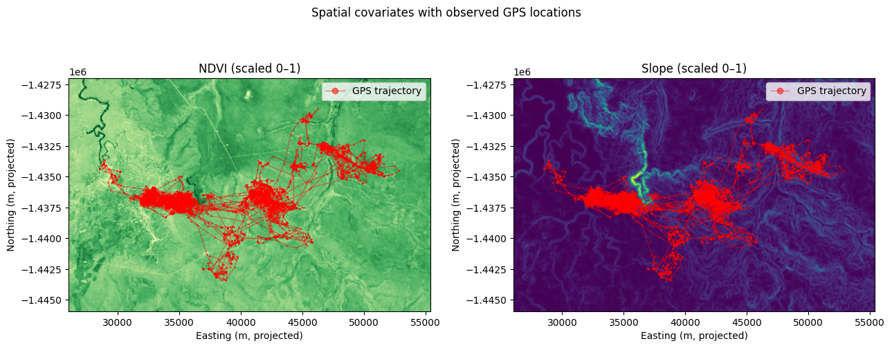

Here we show an example of how to use the functions in the deepSSF package, showing data loading, model training and testing and generating simulations.
To install and use the package, visit the GitHub repository here: https://github.com/swforrest/deepSSF_package, which has instructions in the README. This script will not download with the package, but it can be accessed from the deepSSF_package repo, under the ‘examples’ folder (as a Jupyter notebook or a html file).
We use data that comes with the package in the datasets folder from the package, which is downloaded using installing. It is the GPS tracking data of a single water buffalo (~10,000 locations), and two spatial layers, NDVI (the average from 2018-2019, which covers the temporal extent of the data), and slope.
Code
import mathfrom pathlib import Pathimport matplotlib.pyplot as pltimport numpy as npimport torchimport rasterioimport deepssffrom deepssf import ( ConvJointModel, EarlyStopping, ModelParams, create_gif, fit, get_device, load_environmental_layers, make_dataloaders, make_optimisers, negativeLogLikeLoss, filter_steps_by_window, prepare_movement_df, simulate_trajectory, validate_next_step_probs,)import pandas as pdfrom datetime import datetime # Date/time utilitiesfrom IPython.display import Image # For plotting GIFsfrom rasterio.plot import show # For plotting raster layersprint(f"deepssf {deepssf.__version__}")print(f"torch {torch.__version__}")
deepssf 0.1.2
torch 2.12.0
Code
# Reproducibility — fix random seeds so results are the same on every run.torch.manual_seed(42)np.random.seed(42)# DEVICE is capitalised because it is a module-level constant (set once, never reassigned).# get_device() returns 'cuda' if a GPU is available, 'mps' on Apple Silicon,# or 'cpu' otherwise. All tensors and the model are moved to this device.DEVICE = get_device()print(f"Device: {DEVICE}")
Device: mps
Import data
The csv file is imported with a timestamp and an x and y coordinate. In our case the data was already in a projected format that is specific to Australia (EPSG:3112)
Code
# All-caps names below are module-level constants — set once here and referenced# throughout the notebook without being reassigned. Python has no built-in# constant keyword, so capitalisation is the community convention (PEP 8) to# signal "do not change this value".DATA_DIR = Path("../src/deepssf/datasets/data") # location of the bundled sample dataCSV_PATH = DATA_DIR /"buffalo_djelk_id2005.csv"# GPS tracking data for individual 2005LAYER_PATHS = {"ndvi": str(DATA_DIR /"ndvi_2005.tif"), # Normalised Difference Vegetation Index"slope": str(DATA_DIR /"slope_2005.tif"), # terrain slope derived from a DEM}OUTPUT_DIR = Path("outputs") # figures and model checkpoints go hereSNAPSHOT_DIR = OUTPUT_DIR /"training_snapshots"# per-batch prediction-map snapshotsOUTPUT_DIR.mkdir(exist_ok=True)
Code
raw_df = pd.read_csv(CSV_PATH)print(f"Raw GPS fixes : {len(raw_df):,}")print(f"Individuals : {raw_df['id'].nunique()}")# Sort by the individual ID and timestamp to ensure correct temporal orderraw_df = raw_df.sort_values(by=["id", "time"]).reset_index(drop=True)# # Convert the 'time' column to the correct timezone (here Australia/Darwin) # raw_df["time"] = (# pd.to_datetime(raw_df["time"], utc=True)# .dt.tz_convert("Australia/Darwin")# )raw_df.head()
Raw GPS fixes : 10,297
Individuals : 1
id
time
x
y
0
2005
2018-07-25T00:04:02Z
41941.331695
-1.435875e+06
1
2005
2018-07-25T01:04:23Z
41969.310875
-1.435671e+06
2
2005
2018-07-25T02:04:39Z
41921.521939
-1.435654e+06
3
2005
2018-07-25T03:04:17Z
41779.439594
-1.435601e+06
4
2005
2018-07-25T04:04:39Z
41841.203272
-1.435635e+06
Code
# load_environmental_layers() reads each GeoTIFF listed in LAYER_PATHS, min–max# scales every band to [0, 1], and returns:# env_layers — dict mapping layer name → 2-D NumPy array (H × W)# raster_transform — Affine object that converts pixel (row, col) indices to# projected coordinates (easting, northing) in the same CRS# as the GPS data. This transform is used whenever we need# to translate between pixel space and real-world coordinates.env_layers, raster_transform = load_environmental_layers(LAYER_PATHS)print("Layers loaded:", list(env_layers.keys()))for name, arr in env_layers.items():print(f" {name}: shape={arr.shape}, min={arr.min():.3f}, max={arr.max():.3f}")
# Plot each spatial covariate with the observed GPS locations overlaid.# This confirms the raster extent covers the animal's home range and gives# a visual sense of the landscape the model will learn from.fig, axes = plt.subplots(1, 2, figsize=(13, 5))layer_meta = [ ("ndvi", "NDVI (scaled 0–1)", "YlGn"), ("slope", "Slope (scaled 0–1)", "viridis"),]for ax, (name, label, cmap) inzip(axes, layer_meta): rasterio.plot.show(env_layers[name], transform=raster_transform, ax=ax, cmap=cmap) ax.plot( raw_df["x"], raw_df["y"],"r-o", alpha=0.5, markersize=1, linewidth=0.8, label="GPS trajectory", ) ax.set_xlabel("Easting (m, projected)") ax.set_ylabel("Northing (m, projected)") ax.set_title(label) ax.legend(loc="upper right", markerscale=6)plt.suptitle("Spatial covariates with observed GPS locations", y=1.01)plt.tight_layout()plt.savefig(str(OUTPUT_DIR /"spatial_covariates.png"), dpi=100)plt.show()

Code
# prepare_movement_df() converts a fixes dataframe (one row per GPS location)# into a *step* dataframe (one row per movement between consecutive fixes).# For each step it computes:# dx, dy — displacement in projected CRS units (metres)# bearing — direction of travel (radians; 0 = north, clockwise positive)# bearing_tm1 — bearing of the *previous* step, used as a model input so# the network can capture directional persistence (autocorrelation)# dt_hour — time elapsed between consecutive fixes (hours)# hour_t1, yday_t1— decimal hour-of-day and day-of-year at the step start location# *_sin1 / *_cos1 — sine/cosine encodings of hour and yday (see SCALAR_COLS below)# The trailing underscore on column names (x1_, y1_, t1_, etc.) flags them as# "start of step" variables; x2_, y2_, t2_ are the corresponding "end of step" values.# The last fix for each individual is dropped because no forward step can be formed.step_df = prepare_movement_df(raw_df)print(f"Movement steps : {len(step_df):,} ({len(raw_df) -len(step_df)} dropped — last fix per individual)")step_df.head()
Movement steps : 10,296 (1 dropped — last fix per individual)
id
t1_
x1_
y1_
t2_
x2_
y2_
dx
dy
bearing
bearing_tm1
dt_hour
hour_t1
yday_t1
hour_t1_sin1
hour_t1_cos1
yday_t1_sin1
yday_t1_cos1
0
2005
2018-07-25T00:04:02Z
41941.331695
-1.435875e+06
2018-07-25T01:04:23Z
41969.310875
-1.435671e+06
27.979180
204.064135
1.434536
0.000000
1.005833
0.066667
206.0
0.017452
0.999848
-0.391358
-0.920239
1
2005
2018-07-25T01:04:23Z
41969.310875
-1.435671e+06
2018-07-25T02:04:39Z
41921.521939
-1.435654e+06
-47.788936
16.857110
2.802478
1.434536
1.004444
1.066667
206.0
0.275637
0.961262
-0.391358
-0.920239
2
2005
2018-07-25T02:04:39Z
41921.521939
-1.435654e+06
2018-07-25T03:04:17Z
41779.439594
-1.435601e+06
-142.082345
53.568427
2.781049
2.802478
0.993889
2.066667
206.0
0.515038
0.857167
-0.391358
-0.920239
3
2005
2018-07-25T03:04:17Z
41779.439594
-1.435601e+06
2018-07-25T04:04:39Z
41841.203272
-1.435635e+06
61.763677
-34.322938
-0.507220
2.781049
1.006111
3.066667
206.0
0.719340
0.694658
-0.391358
-0.920239
4
2005
2018-07-25T04:04:39Z
41841.203272
-1.435635e+06
2018-07-25T05:04:27Z
41655.463332
-1.435604e+06
-185.739939
31.003534
2.976198
-0.507220
0.996667
4.066667
206.0
0.874620
0.484810
-0.391358
-0.920239
Code
# ---------------------------------------------------------------------------# SCALAR_COLS — non-spatial inputs that are broadcast into the spatial window# ---------------------------------------------------------------------------# The model receives a fixed-size spatial window centred on each step's start# location. To let the network express time-varying habitat preferences (e.g.# different nocturnal vs diurnal use), scalar covariates are tiled into# additional channels of the same H × W size, so every pixel "knows" the# current time context when habitat suitability is estimated.## hour_t1_sin1 / hour_t1_cos1# Sine and cosine of (2π × hour / 24), encoding time-of-day as a# *circular* variable. The circular encoding means 23:00 and 01:00 are# treated as adjacent — a plain hour value would have an artificial# discontinuity at midnight.## yday_t1_sin1 / yday_t1_cos1# Same circular encoding for day-of-year (1–365), capturing seasonal# variation in habitat use (e.g. dry-season vs wet-season movements).## dt_hour# Elapsed time between consecutive fixes (hours). Because GPS collars# do not always fix at a perfectly regular rate, including dt_hour lets# the movement kernel rescale expected displacement proportionally to# the actual time interval rather than assuming a fixed fix rate.# Note: dt_hour must be supplied at *simulation* time as well, so that# simulate_trajectory() produces inputs consistent with training.# ---------------------------------------------------------------------------SCALAR_COLS = ["hour_t1_sin1", "hour_t1_cos1", "yday_t1_sin1", "yday_t1_cos1", "dt_hour"]WINDOW_SIZE =101# spatial context window side length (pixels); 101 × 25 m = 2525 m radiusPIXEL_SIZE =25# raster resolution in metres — must match the loaded GeoTIFFsBATCH_SIZE =32# number of steps per training mini-batch# ---------------------------------------------------------------------------# Pre-calculate the flattened CNN output size so ModelParams can be set# without hard-coding it. The formula mirrors the layers inside ConvJointModel:# conv (padding=1) keeps the spatial dimension unchanged at each layer# maxpool k=2, s=2 halves the spatial dimension (floor division) at each layer# ---------------------------------------------------------------------------OUTPUT_CHANNELS =4dim = WINDOW_SIZEfor _ inrange(3): dim = math.floor((dim +2*1-3) /1+1) # conv (pad=1 preserves dim) dim = math.floor((dim -2) /2+1) # maxpool k=2, s=2DENSE_DIM = OUTPUT_CHANNELS * dim * dimprint(f"After 3× conv+maxpool: dim={dim} → dense_dim_in_all={DENSE_DIM}")# filter_steps_by_window() removes steps whose straight-line displacement# exceeds half the spatial window (WINDOW_SIZE × PIXEL_SIZE / 2 metres).# Such steps would place the true next location outside the predicted# probability map, causing an index error in the loss function.step_df = filter_steps_by_window(step_df, window_size=WINDOW_SIZE, pixel_size=PIXEL_SIZE)print(f"Steps after window filter: {len(step_df):,}")
After 3× conv+maxpool: dim=12 → dense_dim_in_all=576
Steps after window filter: 10,101
Code
# make_dataloaders() splits step_df chronologically into train / val / test# subsets (here 80 / 10 / 10 %) and returns a PyTorch DataLoader for each.# Each DataLoader yields tuples of:# x1 — spatial window tensor (batch × n_spatial_channels × H × W)# One channel per entry in LAYER_PATHS, cropped around each step's start pixel.# x2 — scalar covariate tensor (batch × len(SCALAR_COLS))# Raw scalar values; broadcast into spatial maps *inside* the model.# x3 — previous bearing tensor (batch × 1)# Conditions the movement kernel on the direction of the prior step.# (px2, py2) — pixel indices of the *true* next location within the window# Used by the loss function to look up the predicted probability at the# observed destination.# The layer_paths argument causes the function to re-read the rasters internally,# so the DataLoader is independent of the env_layers dict loaded above.dl_train, dl_val, dl_test = make_dataloaders( layer_paths=LAYER_PATHS, window_size=WINDOW_SIZE, batch_size=BATCH_SIZE, train_split=0.8, val_split=0.1, scalar_cols=SCALAR_COLS, df=step_df,)print(f"Train batches : {len(dl_train)}")print(f"Val batches : {len(dl_val)}")print(f"Test batches : {len(dl_test)}")
Layer 'ndvi': min=-0.06614641100168228, max=0.731696367263794 → scaled to [0, 1]
Layer 'slope': min=0.00013558653881773353, max=12.298083305358887 → scaled to [0, 1]
Train batches : 253
Val batches : 32
Test batches : 32
Code
# Inspect one batch to verify tensor shapes match ModelParams expectations.# x1 has one channel per spatial layer (ndvi + slope = 2). The scalar covariates# in x2 are broadcast to full H × W maps *inside* ConvJointModel and concatenated# with x1 there, giving the CNN 2 + len(SCALAR_COLS) = 7 input channels total.x1, x2, x3, (px2, py2), _ =next(iter(dl_train))print(f"Spatial x1 : {x1.shape} (batch × channels × H × W)")print(f"Scalars x2 : {x2.shape} (batch × len(SCALAR_COLS))")print(f"Bearing x3 : {x3.shape} (batch × 1)")print(f"Next-step px2: {px2[:4].tolist()} py2: {py2[:4].tolist()}")
# ModelParams is a thin dict-like container that groups all architecture# hyper-parameters so they can be passed to ConvJointModel and logged together.params = ModelParams({"batch_size": BATCH_SIZE,"image_dim": WINDOW_SIZE, # spatial window side length (pixels)"pixel_size": PIXEL_SIZE, # metres per pixel"dim_in_nonspatial_to_grid": len(SCALAR_COLS), # scalar channels tiled into the window"dense_dim_in_nonspatial": len(SCALAR_COLS), # scalar inputs to the dense MLP branch"dense_dim_hidden": 64, # hidden units in the scalar MLP"dense_dim_in_all": DENSE_DIM, # flattened CNN output size (computed above)"input_channels": 2+len(SCALAR_COLS), # 2 env layers + scalar-to-grid channels"output_channels": OUTPUT_CHANNELS, # feature maps out of each conv layer"kernel_size": 3, # conv kernel spatial size"stride": 1,"kernel_size_mp": 2, # max-pool kernel size"stride_mp": 2,"padding": 1, # same-padding to preserve spatial dims through conv"num_movement_params": 12, # parameters of the movement kernel"dropout": 0.0,"device": DEVICE,})# ConvJointModel is a joint habitat–movement model with two heads:# 1. Habitat head — a small CNN applied to the spatial window (env layers + tiled# scalars) that outputs a per-pixel log-suitability map.# 2. Movement head — a dense MLP that takes the scalar covariates and the previous# bearing, and produces parameters for a parametric movement kernel (a mixture# of wrapped distributions centred on the current location).# The two log-probability surfaces are summed pixel-wise to give the joint# predicted probability map for the animal's next step.model = ConvJointModel(params).to(DEVICE)n_params =sum(p.numel() for p in model.parameters())print(f"Model parameters : {n_params:,}")
Model parameters : 43,009
Code
# negativeLogLikeLoss scores each predicted probability map against the true# next-step pixel index; minimising it pushes probability mass toward observed locations.loss_fn = negativeLogLikeLoss(reduction="mean")# make_optimisers() creates two Adam optimisers with separate learning rates:# lr_habitat — controls the CNN (habitat) head; typically higher# lr_movement — controls the movement-kernel MLP; kept lower for stability# It also returns a ReduceLROnPlateau scheduler for each optimiser that reduces# the learning rate by a factor of 'scheduler_factor' (default = 0.1) if validation # loss does not improve for 'scheduler_patience' epochs (default = 5).optimisers, schedulers = make_optimisers( model, lr_habitat=1e-3, lr_movement=1e-5, scheduler_patience=3, scheduler_factor=0.1)# EarlyStopping monitors validation loss and saves the best model weights to disk# whenever a new minimum is reached. Training stops automatically if the loss# does not improve for `patience` consecutive epochs, preventing overfitting.early_stop = EarlyStopping( patience=5, verbose=True, path=str(OUTPUT_DIR /"best_model.pt"))
Code
# fit() runs the full training loop.# Inputs : model, train/val dataloaders, loss function, optimisers,# learning-rate schedulers, early-stopping callback, and snapshot settings.# Outputs: history dict with keys 'train_losses' and 'val_losses'# (one scalar value per completed epoch).# Every snapshot_item training steps, a predicted probability map is written to# SNAPSHOT_DIR. create_gif() (next cell) assembles these into an animation so# you can see how the predictions evolve as training progresses.## image_trim_pixels tells fit() how many outer pixel rings to trim from the CNN output# before scoring. Each conv+pool stage reduces the effective receptive field near# the image boundary, so trimming avoids penalising predictions in regions where# the network has only seen zero-padded input. history = fit( model=model, image_trim_pixels=4, window_size=WINDOW_SIZE, dl_train=dl_train, dl_val=dl_val, loss_fn=loss_fn, optimisers=optimisers, schedulers=schedulers, n_epochs=50, early_stopping=early_stop, snapshot_dir=str(SNAPSHOT_DIR), snapshot_item=500,)
# Convert the NumPy rasters loaded earlier into PyTorch tensors.# Both validate_next_step_probs() and simulate_trajectory() call# get_landscape(month_index) at each step to fetch the current environmental# layers as a list of 2-D tensors.# With static (non-seasonal) rasters the month_index argument is unused.# For seasonal data (e.g. monthly NDVI composites) you would index into a# stack of layers here based on the current month.ndvi_t = torch.from_numpy(env_layers["ndvi"].astype(np.float32))slope_t = torch.from_numpy(env_layers["slope"].astype(np.float32))def get_landscape(_month_index):# Returns layers in the same order as LAYER_PATHS.return [ndvi_t, slope_t]
Code
# Use the last 10 % of steps as the test set (matches the DataLoader split).n_test =int(len(step_df) *0.1)test_sample = step_df.iloc[-n_test:].reset_index(drop=True)print(f"Validating on {len(test_sample):,} steps")# validate_next_step_probs() runs the model forward on each test step and# records the probability mass assigned to the *true* next location.# Inputs : model, test dataframe, landscape callable, raster Affine transform,# window size, scalar column names, temporal column names,# and a function mapping day-of-year → month index (for get_landscape).# Outputs: test_sample dataframe with three new columns appended:# habitat_prob — probability at the true location from the habitat head alone# move_prob — probability at the true location from the movement head alone# next_step_prob — joint (habitat × movement) probability at the true location# Higher values mean the model correctly concentrated probability mass near the# observed next fix. The distribution of next_step_prob over many steps is the# primary validation metric.val_results = validate_next_step_probs( model, test_sample, get_landscape=get_landscape, transform=raster_transform, window_size=WINDOW_SIZE, scalar_cols=tuple(SCALAR_COLS), yday_col="yday_t1", bearing_col="bearing_tm1", month_index_fn=lambda _yday: 0, # static layers — month doesn't matter)print(val_results[["habitat_prob", "move_prob", "next_step_prob"]].describe())
Validating on 1,010 steps
habitat_prob move_prob next_step_prob
count 1010.000000 1010.000000 1010.000000
mean 0.000177 0.029047 0.035263
std 0.000153 0.078418 0.093471
min 0.000000 0.000000 0.000000
25% 0.000098 0.000252 0.000261
50% 0.000108 0.005399 0.006263
75% 0.000176 0.019273 0.023909
max 0.000789 0.493885 0.746977
Code
# Use the last 10 % of steps as the test set (matches the DataLoader split)n_test =int(len(step_df) *0.1)test_sample = step_df.iloc[-n_test:].reset_index(drop=True)print(f"Validating on {len(test_sample):,} steps")val_results = validate_next_step_probs( model, test_sample, get_landscape=get_landscape, transform=raster_transform, window_size=WINDOW_SIZE, scalar_cols=tuple(SCALAR_COLS), yday_col="yday_t1", bearing_col="bearing_tm1", month_index_fn=lambda _yday: 0, # static layers — month doesn't matter)print(val_results[["habitat_prob", "move_prob", "next_step_prob"]].describe())
Validating on 1,010 steps
habitat_prob move_prob next_step_prob
count 1010.000000 1010.000000 1010.000000
mean 0.000177 0.029047 0.035263
std 0.000153 0.078418 0.093471
min 0.000000 0.000000 0.000000
25% 0.000098 0.000252 0.000261
50% 0.000108 0.005399 0.006263
75% 0.000176 0.019273 0.023909
max 0.000789 0.493885 0.746977
![]()